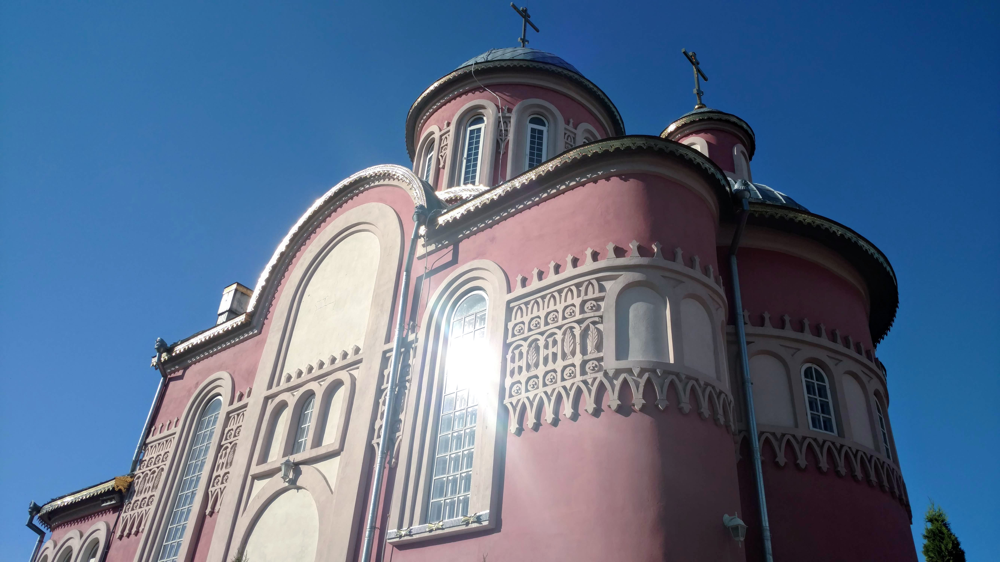

Храм Святого великомученика Пантелеймона
Українська Православна Церква, Володимир-Волинська єпархія, місто
Ковель

Ковельське міське благочиння
Храм Святого Архістратига Божого Михаїла
Скит святого пророка і Хрестителя Господнього Іоанна Предтечі
Ковель
Сторожка
2021 ©
Данилюк